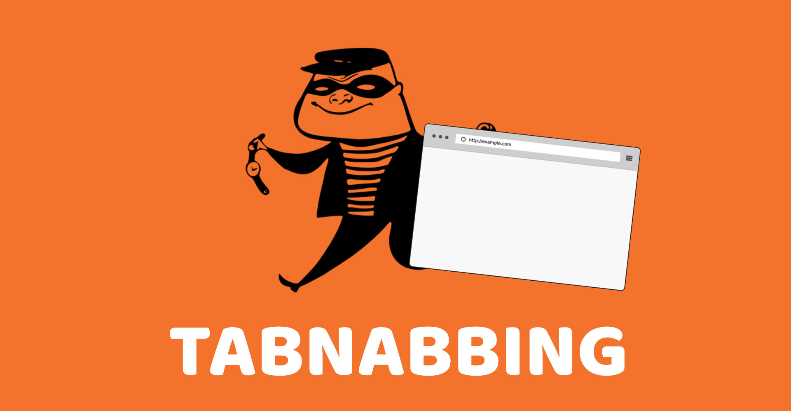

<h2>Phase 4: Eyes Wide Open</h2>
<p>One of your open tabs just changed. 👀 Did you notice?</p>
<p>To pass this challenge, answer the following:</p>

**“What is tabnabbing?”**

<form id="tabnabbingForm">
  
  <input type="text" id="tabInput" placeholder="Enter your answer" required>
  <button type="submit">Submit</button>
</form>

<p id="tabFeedback"></p>

<script>
  document.getElementById("tabnabbingForm").addEventListener("submit", function(e) {
    e.preventDefault();
    const input = document.getElementById("tabInput").value.toLowerCase().trim();
    const feedback = document.getElementById("tabFeedback");

    if (input.includes("tabnabbing") && (input.includes("phishing") || input.includes("credential"))) {
      feedback.textContent = "✅ Nicely done. Let’s see if you can find Grifter...";
      setTimeout(() => {
        window.location.href = "/phase5.html";  // replace with your actual next step
      }, 2000);
    } else {
      feedback.textContent = "❌ Not quite. Try explaining what tabnabbing is.";
    }
  });
</script>
